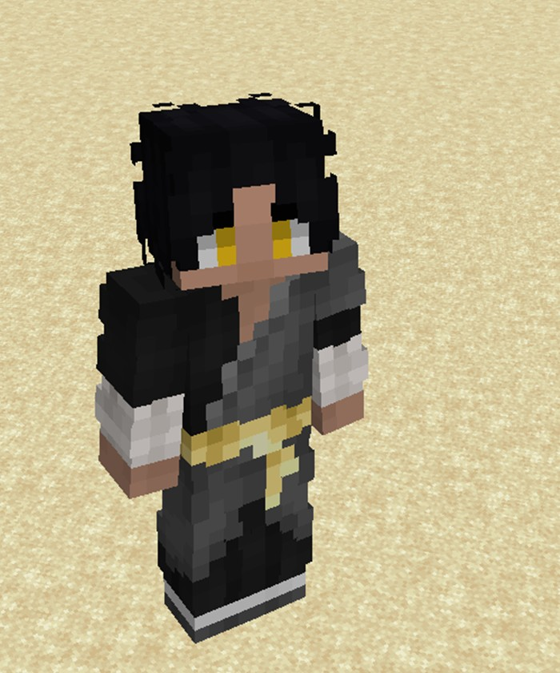
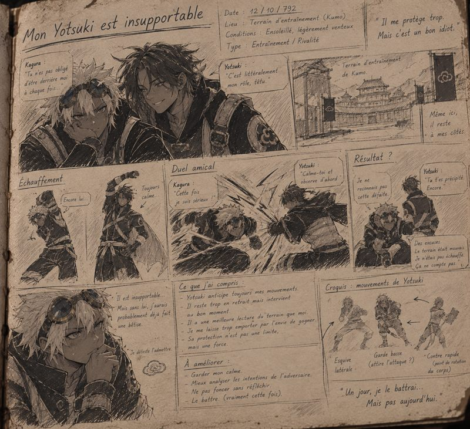
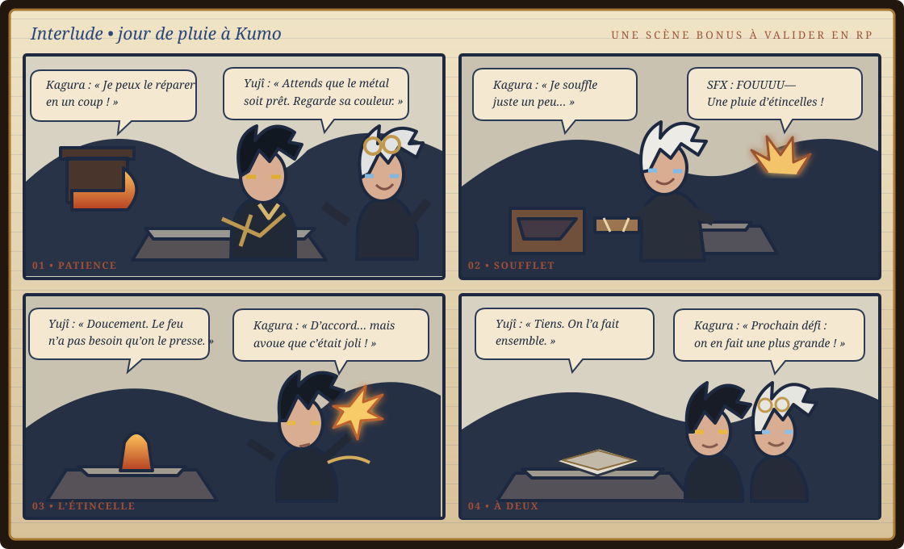

Choisis un carnet pour retrouver les scènes déjà vécues, suivre les progrès de Yujî et préparer la suite de son histoire.
Registre shinobi • Kumo
Dossier de Yujî
C’est mon histoire : j’apprends à veiller sur quelqu’un sans décider à sa place.

Ton screen de Yujî • la référence visuelle de sa tenue et de ses yeux jaunes.
Un Genin de Kumo
La force sous contrôle
J’ai treize ans et je viens de recevoir mon bandeau. Ma carrure m’aide, mais je mise surtout sur la précision : j’observe avant de bouger, je lis le terrain et je préfère arrêter le danger avant qu’il n’atteigne ceux que je veux protéger.
Mon chakra de foudre porte l’orage des Yotsuki, mais je n’ai pas besoin de faire du bruit pour être entendu. Ma vraie force, c’est de savoir attendre : je garde mon calme, je choisis mon moment et je retiens mon bras quand intervenir ne servirait à rien.
Avec Kagura, mon meilleur ami, ce réflexe est mis à l’épreuve. Je suis plus fort et plus calme que lui, mais je dois apprendre à ne pas choisir à sa place. Sa confiance compte autant que ma force.
CalmePuissantObservateurFoudre maîtrisée
NomYujî Yotsuki
Âge / rang13 ans • Genin
VillageKumogakure
Voie de combatKenjutsu • affinité foudre
01 / ORIGINES
Enfance
Une promesse avant un visage
J’ai grandi à Kumo dans une famille Yotsuki ordinaire. Mon père surveille et protège le village ; il m’a raconté l’alliance avec les Arashi et le serment né pendant la guerre contre les Raikō. Ma mère entretient les armes et l’équipement du clan. Très tôt, j’ai voulu comprendre ce que « protéger » veut vraiment dire.
02 / CLAN
Vie Yotsuki
L’honneur comme responsabilité
Je respecte la parole donnée et les anciens, mais je ne confonds pas tradition et obéissance aveugle. Pour moi, l’honneur n’est pas une façon de briller : c’est accepter les conséquences de mes choix. Je préfère écouter les récits du clan et observer les armes plutôt que chercher à impressionner.
03 / ACADÉMIE
Apprentissage
Regarder avant d’agir
À l’Académie, ma force naturelle ne suffisait pas. J’ai appris à contrôler mon corps, à lire le terrain et à agir en équipe. La stratégie et les formations m’intéressent : empêcher un danger compte autant que vaincre un adversaire.
04 / SILHOUETTE
Description physique
Un adolescent, pas une légende
À treize ans, j’ai une carrure solide et des épaules larges, mais l’entraînement m’a appris à rester rapide. Mes cheveux noirs sont courts et un peu en bataille. Mes yeux jaunes et mon regard calme donnent souvent l’impression que je suis en train d’analyser tout ce qui m’entoure.
05 / TEMPÉRAMENT
Description mentale
Protéger sans enfermer
Je suis responsable, observateur et peu attiré par la gloire. Dès que je pense pouvoir aider, j’interviens ; c’est à la fois ma qualité et mon défaut. Il m’arrive de porter des responsabilités qui ne sont pas les miennes et d’insister quand on refuse mon aide. J’apprends à rester présent sans imposer ma volonté. Si j’échoue, j’analyse d’abord mes erreurs ; si je perds, je m’entraîne encore, parfois trop. Mon calme n’est pas de l’indifférence : je laisse la situation me parler avant de bouger.
ProtecteurCalmeObservateurTêtu quand quelqu’un est en dangerExigeant envers lui-même
Objectifs • choix • scènes à venir
Pistes RP de Yujî
Un espace pour garder les évolutions que tu veux jouer. Les pistes de départ viennent de son histoire ; coche-les quand elles auront été vécues ou ajoute les tiennes.
Son fil rouge
Apprendre à protéger sans enfermer
Je veux être quelqu’un sur qui on peut compter, mais mon réflexe de protéger peut devenir envahissant. Je veux apprendre à écouter d’abord, respecter un refus, rester disponible et intervenir quand la situation l’exige.
Avec Kagura
Transformer l’opposition en complémentarité
Kagura part vite et fort ; j’observe et je temporise. Je veux qu’on apprenne quand laisser l’autre mener, quand se couvrir et comment se dire les choses sans fragiliser notre amitié.
Mes objectifs RP
À suivre au fil des scènes
Mes rencontres à Kumo
Grand Carnet
Je donne une page à chaque personne que je rencontre. J’ouvre le livre pour retrouver un nom ou ajouter quelqu’un au fil de mes scènes.
Meilleur ami • Clan Arashi
Kagura Arashi
Kagura est mon meilleur ami. Il déborde d’énergie, part souvent avant la fin du plan et transforme facilement un entraînement en défi. On n’avance pas au même rythme, mais je lui fais confiance autant qu’il me fait confiance.
Première rencontre
À l’Académie • on se lançait souvent des défis
Ce qui nous distingue
Je suis plus fort et plus calme que lui ; Kagura, lui, fonce à fond.
Ce qui nous unit
Je veille sur lui, il veille sur moi. On se dit les choses en face et on repart côte à côte.
« On est comme deux faces d’une même pièce. Je le protégerai et il me protégera. »
Meilleurs amis • deux façons d’avancer
Yujî × Kagura Arashi
Je suis plus fort et plus calme que Kagura. Lui déborde d’énergie ; il m’empêche de réfléchir si longtemps que je finis par hésiter, et j’essaie de l’aider à voir où il fonce.
Yotsuki • ancre
Yujî
J’observe, j’encaisse la pression et je choisis mon moment. Je suis plus fort que Kagura, mais je n’ai pas besoin de prendre toute la place.
×
Arashi • étincelle
Kagura
Avec ses cheveux blancs et ses lunettes, Kagura ne tient pas en place. Il est souvent déjà parti avant la fin du plan. Il me pousse à agir ; j’essaie de lui faire regarder où il fonce.
Choisis un moment de leur histoire
Comment réagit le duo ?
Extrait du carnet • 12/10/792
Encore parti sans prévenir
Kagura : « Tu n’es pas obligé d’être derrière moi à chaque fois ! »
Yujî : « Je ne suis pas derrière toi. Je regarde déjà où tu vas atterrir. »
Kagura déclenche l’action et je me place pour couvrir sa sortie. Après, je lui parle du danger sans lui faire la leçon devant tout le monde. Notre confiance tient à ce rythme : il ose, je veille, et parfois on échange les rôles.
Accord du duo86 % • confiance solide
La règle des deux faces
Je le protège. Kagura me protège aussi.
Je suis plus fort et plus calme, mais Kagura n’est pas un poids que je dois porter. Dans son carnet, il a écrit qu’on est « deux faces d’une même pièce ». On peut se dire les choses franchement, se chamailler après un entraînement et rester côte à côte quand la plaisanterie s’arrête.
Yujî dans le duo
Le calme qui veille
J’anticipe ses mouvements, je lis le terrain et j’interviens quand il le faut. Je suis plus fort, mais je dois faire attention à ne pas transformer ma force en envie de tout contrôler.
Kagura dans le duo
L’énergie qui m’entraîne
Kagura arrive toujours avec une idée, un défi ou l’envie de repartir au combat. Son enthousiasme me remet en mouvement et me rappelle qu’un bon plan ne doit pas devenir une excuse pour attendre éternellement.
Notre rivalité
Une défaite n’arrête rien
Après un duel, Kagura peut contester le résultat et trouver des excuses. Je lui réponds sans l’humilier. Notre rivalité nous donne surtout rendez-vous au prochain entraînement.
Notre confiance
La protection va dans les deux sens
Je ne suis pas le seul à veiller sur nous. Kagura sait rester à mes côtés et me rappeler que je n’ai pas besoin de tout porter tout seul.
Pages ajoutées à leur histoire
Souvenirs du duo
Scènes jouées • étapes de progression
Chronologie RP
Je garde ici les dates de mes scènes, mes rencontres et mes changements de grade. Chaque souvenir peut me ramener à la page du Journal de bord qui raconte ce moment.
Ajouter un repère à la chronologie
Souvenirs RP • récits & planches BD
Journal de bord
Tu me racontes la scène dans un prompt ; je la mets en forme ici comme un récit en paragraphes, avec une petite illustration BD liée à Yujî et Kagura.
12 / 10 / 792 • Terrain d’entraînement de Kumo
Mon Yotsuki est insupportable
EntraînementRivalité amicaleKagura × Yujî
« Tu n’es pas obligé d’être derrière moi à chaque fois », me lance Kagura en arrivant sur le terrain, déjà prêt à me défier. Je ne m’énerve pas. « C’est littéralement mon rôle, têtu. » Je me place face à lui ; l’échauffement devient vite un duel amical. Kagura attaque à fond. Je garde mon calme, observe ses appuis et attends le bon instant pour intercepter son mouvement.
J’ai gagné l’échange. Kagura a d’abord refusé de l’admettre et accusé le terrain. Je ne l’ai pas rabaissé ; je lui ai simplement dit qu’il s’était encore précipité. Il déteste l’admettre, mais il sait que je lis mieux le terrain et que j’interviens au bon moment. On s’est chamaillés, relevés, et on est déjà repartis avec la promesse d’un prochain duel.
Ce que je retiens : je protège parfois trop. Kagura ne veut pas que je le traite comme quelqu’un de fragile, et il me le dit franchement. Après, on continue côte à côte.

Planche de référence du duo — touche l’image pour l’agrandir.
Interlude • jour de pluie à Kumo
L’étincelle qui n’était pas un éclair
Scène bonusAtelier de forgeÀ valider en RP
La pluie claquait contre les volets de l’atelier. Une lame d’entraînement ébréchée attendait sur l’établi. Kagura a retroussé ses manches : « Je peux la réparer en un coup ! » J’ai posé calmement une main devant le marteau. « Attends que le métal soit prêt. Regarde sa couleur. »
Kagura s’est chargé du soufflet avec un enthousiasme bien trop grand. Le feu a rugi, les braises ont bondi et les étincelles ont jailli. Je l’ai tiré juste à temps hors de leur trajectoire. « Doucement. Le feu n’a pas besoin qu’on le presse. » Il a protesté qu’il avait fait exprès, mais cette fois il m’a écouté.
À la fin, on a redressé et poli la lame ensemble. Elle n’était pas parfaite, mais elle était droite et solide. Kagura l’a levée comme un trophée : « Prochain défi : on en fait une plus grande ! » J’ai souri. « D’abord, tu me laisses finir celle-là. » La pluie continuait dehors ; dans l’atelier, il ne restait qu’une lueur tranquille.
Une scène imaginée pour le carnet : à garder telle quelle ou à ajuster quand tu voudras la jouer en RP.

Planche bonus en quatre cases • clique pour l’agrandir.Ajouter une note rapide sur cet appareil